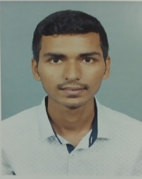

Assistant Professor, Department of Mathematics
I am currently serving as an Assistant Professor at the Government College of Arts, Science and Commerce, Sanquelim, Goa. My academic interests are in mathematics education, problem solving, and mentoring students for university and competitive examinations.
I completed my M.Sc. in Mathematics from Goa University with Rank 1 and qualified CSIR NET (Dec 2019) with an NTA score of 98.44 and All India Rank 51.
Contact: prajyotpatil26204@gmail.com
Education
- M.Sc. Mathematics - Goa University (2020), 89.4% (1431/1600), Rank 1
- CSIR NET - Dec 2019, NTA Score 98.44, Rank 51
- T.Y.B.Sc. - St. Xaviers College Mapusa (2018), 92.6% (1204/1300)
- H.S.C. - S.V. Purushottam Walawalkar Higher Secondary School (2015), 88.1% (529/600)
- S.S.C. - Saraswat Vidhyalay High School (2013), 93.8% (563/600)
Research Interests
- Mathematics education and student learning outcomes: Focus on classroom methods that improve conceptual clarity and long-term retention in undergraduate mathematics courses.
- Problem solving strategies for undergraduate learners: Designing structured problem-solving frameworks that help students move from routine practice to independent reasoning.
- Competitive mathematics preparation: Developing targeted preparation approaches for NET-level and university-level examinations while aligning with core curriculum outcomes.
Publications
Selected Publications (Format Preview)
- Author(s). "Title of Paper." Journal Name, Volume(Issue), Year, Pages. DOI
- Author(s). "Title of Conference Paper." Conference Name, Year, Location.
Full publication list is being updated and will be published by June 2026. You can refer to my CV in the meantime.
Achievements
- CSIR NET qualified with exceptional ranking (Rank 51).
- Rank 1 in M.Sc. Mathematics, Goa University.
- Top 1% scholar - INSPIRE Scholarship (2015).
- Perfect score (100/100) in Mathematics at 10th standard.
- Multiple university ranks, including Rank 1 in GUART 2018.
Teaching & Academic Work
- Undergraduate mathematics course delivery and academic mentoring.
- Examination preparation support, evaluation, and student guidance.
- Participation in departmental academic and college activities.
Contact
Email: prajyotpatil26204@gmail.com
Phone: +91-73503-XXXXX
Institution: Government College of Arts, Science and Commerce, Sanquelim, Goa
GitHub: github.com/Prajyot0105
Academic Profiles: Add Google Scholar / ResearchGate / ORCID links here.